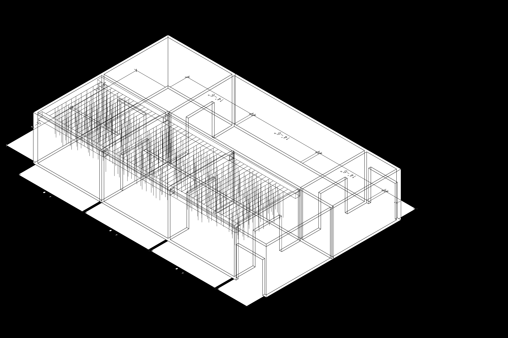

Installation Overview
01 / SPATIAL LAYOUT
Resilience
Is A Somatic
Event
This installation functions as a sensory journey within the Hospital of Emotion. Set in a low-height, low-lux chamber, a 40Hz thrum vibrates through the floor, mimicking internal blood flow to silence linguistic "chatter." Bypassing the intellect to hit the nervous system directly (Francis Bacon), the work posits that resilience is a somatic event: the capacity to endure the un-named weight of existence without retreating into fantasy.
40 Hz FLOOR THRUM
Location
Los Angeles, CA
Opening
May 2026
Lighting
Ultra-low lux · Bioluminescent pulse
Width
12 – 18 feet preferred
Progression
3 phases · 5 stages · Linear
Materials Budget
$9,753 excl. installation

I. Shell · Spatial Allocation
Assumed spatial layout

II. Hanging Systems · Installation
Bumpers, hoses, lycra, balloons

III. Structural Grid · Infrastructure
To be developed for actual spatial allocation